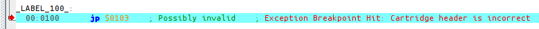

Header
Torniamo a una certa riga all’inizio di hello-world.asm.
ds $150 - @, 0 ; Make room for the header
Che cos’è questo misterioso header, detto anche intestazione? Perché dobbiamo allocargli uno spazio specifico? Queste e tante altre domande troveranno una risposta in questa lezione!
Cos’è l’header?
La prima cosa da fare è spiegare cosa è l’header. È la regione di memoria da $0104 a $014F (inclusa). Contiene metadati sulla ROM, come il titolo, la compatibilità con il Game Boy Color, le dimensioni, due checksum e, cosa interessante, il logo Nintendo che viene visualizzato durante l’animazione di accensione.
Queste e altre informazioni sono disponibili nei documenti Pan.
È interessante notare che la maggior parte delle informazioni contenute nell’header non ha importanza in un hardware reale (la dimensione della ROM è determinata solo dalla capacità del chip ROM nella cartuccia, non dal byte nella intestazione). Difatti, alcuni prototipi di ROM hanno addirittura informazioni errate nell’header!
La maggior parte dell’header veniva utilizzata solo dal reparto di produzione di Nintendo per sapere quali componenti inserire nella cartuccia quando si pubblicava una ROM. Pertanto, solo le ROM inviate a Nintendo dovevano avere una intestazione perfettamente accurata; le ROM utilizzate per i test interni dovevano solo superare i controlli della ROM di avvio, che spiegheremo più avanti.
Tuttavia, nella nostra epoca “moderna”, l’header è molto importante. Gli emulatori (compresi gli emulatori hardware, come le flashcard) devono emulare l’hardware presente nella cartuccia e fanno affidamento su alcuni dei valori presenti nell’header, dato che questa sezione è l’unica fonte di informazioni sull’hardware che la cartuccia della ROM dovrebbe contenere.
ROM di avvio
L’intestazione è profondamente collegata alla cosiddetta boot ROM (ROM di “avvio”).
The most observant and/or nostalgic of you may have noticed the lack of the boot-up animation and the Game Boy’s signature “ba-ding!” in Emulicious. When the console powers up, the CPU does not begin executing instructions at address $0100 (where our ROM’s entry point is), but at $0000.
Tuttavia, in quel momento, un piccolo programma chiamato boot ROM, masterizzato all’interno del silicio della CPU, viene “sovrapposto” alla nostra ROM! La ROM di avvio è responsabile dell’animazione di avvio, ma controlla anche l’intestazione della ROM! In particolare, verifica che i checksum del logo Nintendo e della intestazione siano corretti; se uno dei due controlli fallisce, la ROM di avvio si blocca intenzionalmente e il nostro gioco non verrà mai eseguito :(
For the curious
È possibile trovare una descrizione più dettagliata di ciò che fa la ROM di avvio nei Pan Docs, nonché una spiegazione del controllo del logo. Attenzione, però, perché si tratta di un argomento piuttosto avanzato.
If you want to enable the boot ROMs in Emulicious, you must obtain a copy of the boot ROM(s), whose SHA256 checksums can be found in their disassembly for verification. If you wish, you can also compile SameBoy’s boot ROMs and use those instead, as a free-software substitute.
Then, in Emulicious’ options, go to the Options tab, then Emulation→Game Boy, and choose which of GB and/or GBC boot roms you want to set.
Finally, set the path(s) to the boot ROM(s) you wish to use, and click Open.
Now, just reset the emulator, and voilà!
Un header viene tipicamente definito “valido” se supera i controlli della ROM di avvio e “non valido” in caso contrario.
RGBFIX
RGBFIX è il terzo componente di RGBDS, il cui scopo è scrivere l’header di una ROM. È separato da RGBLINK in modo da poter essere usato come strumento indipendente. Il suo nome deriva dal fatto che RGBLINK di solito non produce una ROM con un header valido, quindi la ROM deve essere “aggiustata” prima di essere pronta per la produzione.
RGBFIX has a bunch of options to set various parts of the header; but the only two that we are using here are -v, which produces a valid header (so, correct Nintendo logo and checksums), and -p 0xFF, which pads the ROM to the next valid size (using $FF as the filler byte), and writes the appropriate value to the ROM size byte.
Guardando altri progetti, si possono trovare invocazioni di RGBFIX con più opzioni, ma queste due dovrebbero essere quasi sempre presenti.
Allora, qual è il problema con questa linea?
Si! Questa linea.
ds $150 - @, 0 ; Make room for the header
Vediamo cosa succede se la rimuoviamo (o la commentiamo).
rgbasm -L -o hello-world.o hello-world.asm
rgblink -o hello-world.gb -n hello-world.sym hello-world.o
(Sto intenzionalmente NON eseguendo RGBFIX; vedremo perché tra poco).

Come ho spiegato, RGBFIX è responsabile della scrittura dell’intestazione, quindi dovremmo usarlo per risolvere questa eccezione.
rgbfix -v -p 0xFF hello-world.gb
warning: Overwrote a non-zero byte in the Nintendo logo
warning: Overwrote a non-zero byte in the header checksum
warning: Overwrote a non-zero byte in the global checksum
Sono sicuro che questi avvisi non sono nulla di cui preoccuparsi… (A seconda della versione di RGBDS in uso, è possibile che siano stati visualizzati avvisi diversi, o addirittura nessuno).
Let’s run the ROM, click on Console on the debugger’s bottom window, press F5 a few times, and…

Ok, allora, cos’è successo?
Come si può vedere dallo screenshot, PC si trova a $0105. Cosa sta facendo lì?
…Oh, EntryPoint è a $0103.
Quindi il jp a $0100 è andato lì e ha iniziato a eseguire le istruzioni (3E CE è la forma grezza di ld a, $CE), ma poi $ED non codifica alcuna istruzione valida, quindi la CPU si blocca.
Ma perché EntryPoint è lì?
Come avrete capito dagli avvisi stampati da RGBFIX, esso sovrascrive l’area dell’header nella ROM.
Tuttavia, RGBLINK non è a conoscenza dell’header (perché RGBLINK non è usato solo per generare ROM!), quindi è necessario riservare esplicitamente spazio per l’area dell’header.
ü•¥
Dimenticare di riservare questo spazio può far sì che un pezzo di codice o di dati finisca lì e poi venga sovrascritto. Questo è un errore comune di chi è alle prime armi che può lasciare perplessi. Fortunatamente, dalla versione 0.5.1 RGBFIX avverte quando rileva questo errore, come mostrato sopra.
Così, preveniamo disastri come questo:
SECTION "Header", ROM0[$100]
jp EntryPoint
ds $150 - @, 0 ; Make room for the header
La direttiva ds sta per “define space” e consente di riempire un intervallo di memoria.
Questa riga specifica riempie tutti i byte da $103 a $14F (inclusi) con il valore $00.
Poiché parti diverse di codice e/o di dati non possono sovrapporsi, questo assicura che l’intervallo di memoria dell’header possa essere sovrascritto in modo sicuro da RGBFIX e che nessun altro venga accidentalmente sovrascritto.
Potrebbe non essere ovvio come questo ds finisca per riempire quello specifico intervallo di memoria.
Il jp a 3 byte copre gli indirizzi di memoria $100, $101 e $102.
(Iniziamo da $100 perché è dove si trova la SECTION definita manualmente).
Quando RGBASM elabora la direttiva ds, @ (che è un simbolo speciale che valuta “l’indirizzo corrente”) ha quindi il valore $103, quindi riempie $150 - $103 = $4D byte con zeri, quindi $103, $104, …, $14E, $14F.
Bonus: il ciclo infinito
(Questo non è propriamente collegato all’header, ma devo spiegarlo da qualche parte e questo è un posto come un altro)
Ci si potrebbe anche chiedere a cosa serva il ciclo infinito alla fine del codice.
Done:
jp Done
Semplicemente, la CPU non smette mai di eseguire istruzioni; quindi, quando il nostro piccolo Hello World è finito e non c’è più nulla da fare, dobbiamo comunque dare alla CPU un po’ di lavoro: quindi, le facciamo fare nulla, per sempre.
Non possiamo lasciare che la CPU se ne vada, perché inizierebbe a eseguire altre parti della memoria come codice, con il rischio di bloccarsi. (Per verificare: rimuovete o commentate queste due righe, compilate nuovamente la ROM e vedete cosa succede)